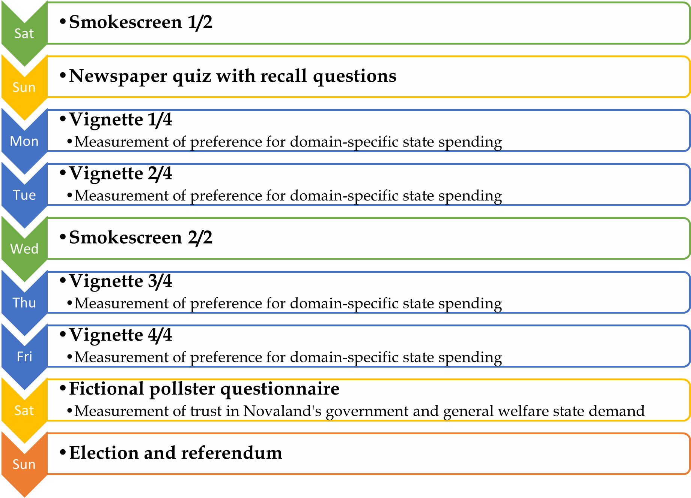

The fictional country of Novaland¶
We created a fictional country called Novaland. The country is described to participants via text as a liberal democracy with an industrialized economy and an extensive welfare state. Within our study, Novaland serves as a setting for the experimental treatments and vignettes. After a small introductory questionnaire, participants are informed about their stay in Novaland and the characteristics of the country itself. Then, they experiences a series of situations in Novaland, including four vignettes included our main experimental treatments and were about accessing public services. Each situation that participants encountered was designed to simulate a real-life scenarios and were formulated to keep participants immersed in the fictional country. At the end of the Novaland stay, participants took part in the national election of Novaland. After the elections, participants filled out a post-experimental questionnaire, which included questions about their socio-demographic characteristics and real-life attitudes.
Participants’ time in Novaland¶
Participants lived through nine virtual days in Novaland. Each day, participants encountered one situation. The first day was a Saturday, which included a smokescreen scenario, followed by a quiz about the information they received in the introductory part. Monday to Friday were dedicated to the four vignettes, which were interrupted by another smokescreen scenario on Wednesday. The second Saturday included a pollster scenario, where participants answered questions about their attitudes towards Novaland. The stay ended with the national election on Sunday. After each day, participants were redirected to a page that showed them the outcome of the situation they encountered that day. This page was used to immerse participants into the virtual country and to increase their feeling of self-efficacy. The flowchart below gives an overview of the nine days in Novaland.
{kind=link}
Experimental treatments in Novaland¶
Over the course of their stay in Novaland, participants were exposed to two experimental treatments. The first treatment was the information about the social norm of bribing in Novaland, which was provided on the fourth page of the introductory part. Participants were randomly assigned to two groups: one group received information about the social norm of bribing in Novaland, while the other group did not receive any information. This information specifically told participants that 6 out of 10 citizens of Novaland are willing to pay a bribe to get better access to a service.
The second treatment was the quality of the public service that participants received in the vignettes. The vignettes were designed to vary the quality of the public service, which was either positive, negative, or negative and corrupt. This variation was used to test how the quality of the public service affects participants’ attitudes and behaviors. Participants were randomly assigned to the number of positive, negative, and corrupt vignettes they encountered during their stay in Novaland. The order of both the vignettes and the service qualities was randomized for each participant.